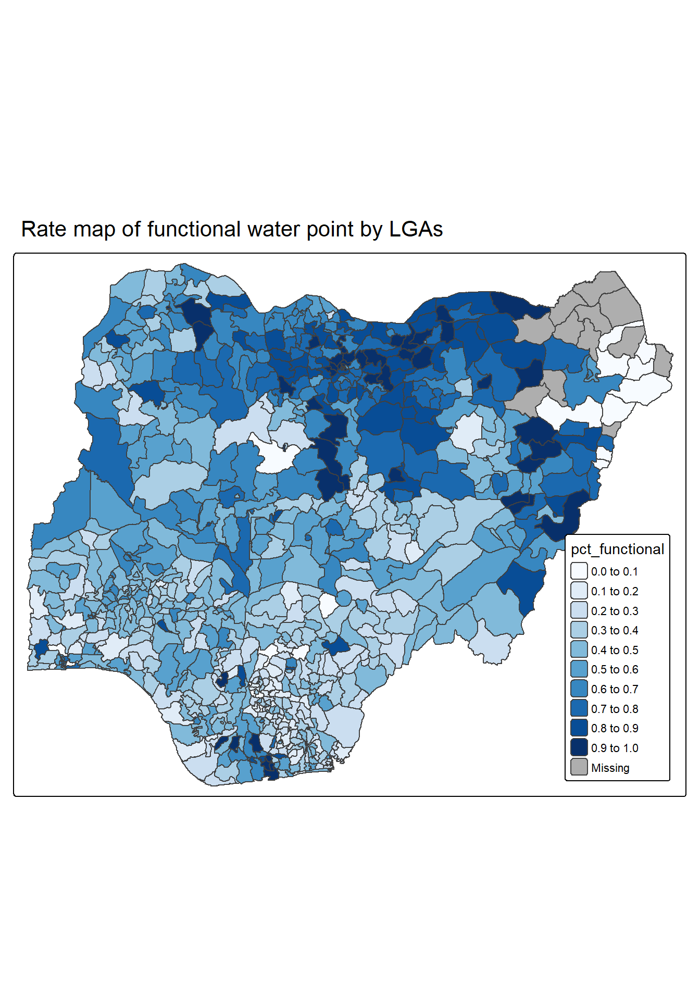
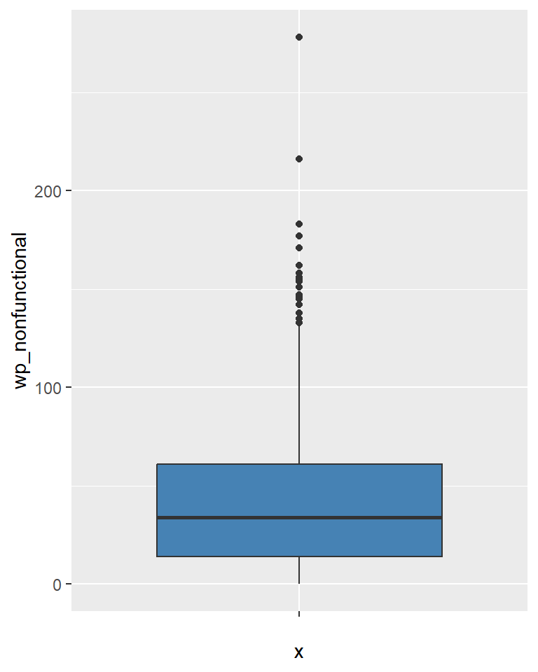

Show the code
pacman::p_load(tmap, tidyverse, sf) NEW! (13 JUN) - Take-Home_Ex03 published!
(13 JUN) - Hands on Exercises published
Audrey Tan
June 13, 2025
June 13, 2025
In this in-class exercise, we will gain hands-on experience on using appropriate R methods to plot analytical maps.
By the end of this in-class exercise, we will be able to use appropriate functions of tmap and tidyverse to perform the following tasks:
Using the steps we learned in previous lesson, install and load sf, tmap and tidyverse packages into R environment.
For the purpose of this hands-on exercise, a prepared data set called NGA_wp.rds will be used. The data set is a polygon feature data.frame providing information on water point of Nigeria at the LGA level.
Using appropriate sf function import NGA_wp.rds into R environment.
Plot a choropleth map showing the distribution of non-function water point by LGA
p1 <- tm_shape(NGA_wp) +
tm_polygons(fill = "wp_functional",
fill.scale = tm_scale_intervals(
style = "equal",
n = 10,
values = "brewer.blues"),
fill.legend = tm_legend(
position = c("right", "bottom"))) +
tm_borders(lwd = 0.1,
fill_alpha = 1) +
tm_title("Distribution of functional water point by LGAs")In much of our readings we have now seen the importance to map rates rather than counts of things, and that is for the simple reason that water points are not equally distributed in space. That means that if we do not account for how many water points are somewhere, we end up mapping total water point size rather than our topic of interest.
We will tabulate the proportion of functional water points and the proportion of non-functional water points in each LGA. In the following code chunk, mutate() from dplyr package is used to derive two fields, namely pct_functional and pct_nonfunctional.
Plot a choropleth map showing the distribution of percentage functional water point by LGA

Extreme value maps are variations of common choropleth maps where the classification is designed to highlight extreme values at the lower and upper end of the scale, with the goal of identifying outliers. These maps were developed in the spirit of spatializing EDA, i.e., adding spatial features to commonly used approaches in non-spatial EDA (Anselin 1994).
The percentile map is a special type of quantile map with six specific categories: 0-1%,1-10%, 10-50%,50-90%,90-99%, and 99-100%. The corresponding breakpoints can be derived by means of the base R quantile command, passing an explicit vector of cumulative probabilities as c(0,.01,.1,.5,.9,.99,1). Note that the begin and endpoint need to be included.
Step 1: Exclude records with NA by using the code chunk below.
Step 2: Creating customised classification and extracting values
0% 1% 10% 50% 90% 99% 100%
0.0000000 0.0000000 0.2169811 0.4791667 0.8611111 1.0000000 1.0000000 When variables are extracted from an sf data.frame, the geometry is extracted as well. For mapping and spatial manipulation, this is the expected behavior, but many base R functions cannot deal with the geometry. Specifically, the quantile() gives an error. As a result st_set_geomtry(NULL) is used to drop geomtry field.
Writing a function has three big advantages over using copy-and-paste:
Source: Chapter 19: Functions of R for Data Science.
Firstly, we will write an R function as shown below to extract a variable (i.e. wp_nonfunctional) as a vector out of an sf data.frame.
Next, we will write a percentile mapping function by using the code chunk below.
percentmap <- function(vnam, df, legtitle = NA, mtitle = "Percentile Map") {
percent <- c(0, .01, .1, .5, .9, .99, 1)
var <- get.var(vnam, df)
bperc <- quantile(var, percent, na.rm = TRUE) # ensure NA-safe
tm_shape(df) +
tm_polygons() +
tm_shape(df) +
tm_polygons(
vnam,
title = legtitle,
breaks = bperc,
palette = "Blues",
labels = c("< 1%", "1% - 10%", "10% - 50%", "50% - 90%", "90% - 99%", "> 99%")
) +
tm_borders() +
tm_layout(
main.title = mtitle,
main.title.position = "center",
legend.outside = TRUE,
legend.outside.position = "right", # Right side
legend.outside.size = 0.2, # Ensure enough space
outer.margins = c(0, 0.1, 0, 0) # Add space on right
)
}To run the function, type the code chunk as shown below.
Note that this is just a bare bones implementation. Additional arguments such as the title, legend positioning just to name a few of them, could be passed to customise various features of the map.
In essence, a box map is an augmented quartile map, with an additional lower and upper category. When there are lower outliers, then the starting point for the breaks is the minimum value, and the second break is the lower fence. In contrast, when there are no lower outliers, then the starting point for the breaks will be the lower fence, and the second break is the minimum value (there will be no observations that fall in the interval between the lower fence and the minimum value).

Displaying summary statistics on a choropleth map by using the basic principles of boxplot.
To create a box map, a custom breaks specification will be used. However, there is a complication. The break points for the box map vary depending on whether lower or upper outliers are present.
The code chunk below is an R function that creating break points for a box map.
boxbreaks <- function(v,mult=1.5) {
qv <- unname(quantile(v))
iqr <- qv[4] - qv[2]
upfence <- qv[4] + mult * iqr
lofence <- qv[2] - mult * iqr
# initialize break points vector
bb <- vector(mode="numeric",length=7)
# logic for lower and upper fences
if (lofence < qv[1]) { # no lower outliers
bb[1] <- lofence
bb[2] <- floor(qv[1])
} else {
bb[2] <- lofence
bb[1] <- qv[1]
}
if (upfence > qv[5]) { # no upper outliers
bb[7] <- upfence
bb[6] <- ceiling(qv[5])
} else {
bb[6] <- upfence
bb[7] <- qv[5]
}
bb[3:5] <- qv[2:4]
return(bb)
}The code chunk below is an R function to extract a variable as a vector out of an sf data frame.
Let’s test the newly created function
The code chunk below is an R function to create a box map. - arguments: - vnam: variable name (as character, in quotes) - df: simple features polygon layer - legtitle: legend title - mtitle: map title - mult: multiplier for IQR - returns: - a tmap-element (plots a map)
boxmap <- function(vnam, df,
legtitle = NA,
mtitle = "Box Map",
mult = 1.5) {
var <- get.var(vnam, df)
bb <- boxbreaks(var, mult = mult)
tm_shape(df) +
tm_polygons() +
tm_shape(df) +
tm_fill(vnam,
title = legtitle,
breaks = bb,
palette = "Blues",
labels = c("Lower outlier",
"< 25%",
"25% - 50%",
"50% - 75%",
"> 75%",
"Upper outlier")) +
tm_borders() +
tm_layout(
main.title = mtitle,
main.title.position = "center",
legend.outside = TRUE,
legend.outside.position = "right",
legend.outside.size = 0.2, # Allocate sufficient space
outer.margins = c(0, 0.1, 0, 0) # Top, right, bottom, left
)
}